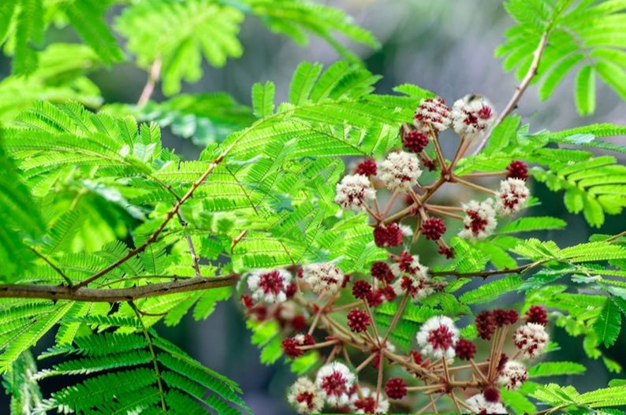

Overview of Shikakai
Shikakai (Acacia concinna) is a traditional herb renowned for promoting hair growth, controlling dandruff, and relieving various skin problems.
Basic Uses & Home Remedies
- Works as a hair conditioner, strengthens hair roots, cleanses hair by removing dirt, and relieves scaling, itching, dryness, and greasiness of the scalp.
- Used as a remedy for constipation, jaundice, fever, wounds, and poisoning.
- Commonly used in herbal shampoos; its saponin content acts as a foaming agent.
Traditional Remedies
- Fruits are used to cleanse hair and clothes, forming lather and acting as an excellent cleanser.
- Used traditionally to treat jaundice, constipation, and skin problems.
- Leaves and pods are used to treat cuts, wounds, and oral diseases due to their astringent properties.
- Leaves act as a purgative, liver stimulant, and improve taste.
- Decoction of pods is used to treat constipation, abdominal pain, indigestion, and flatulence.
- Infusion of pods treats chronic respiratory diseases by reducing muscle constrictions in the airways.
- Saponin content in bark has a spermicidal effect.
- Powdered bark, leaves, or pods used as a hair conditioner cleanses hair, removes excess oil and dirt, and promotes hair growth.
- In jaundice, leaves used with black pepper can cause purgation or vomiting and normalize bile secretion.
- Pod decoction used to wash hair treats head lice, promotes hair growth, and controls dandruff.
- Wick dipped in pod decoction used as a suppository for children relieves indigestion and constipation.
- Leaves used to treat malarial fever.
- Leaves infusion clears dandruff.
- Extract of grounded pods used in skin diseases.
- Bark macerated in water used to wash hair, promotes growth, relieves dandruff, itching, and dryness, and gets rid of lice.
- Bark powder used as bath powder with other ingredients like neem, turmeric, and green gram powder to remove dirt, bad odor, relieve itching, and dryness.
- Infusion of shikakai used to wash wounds reduces swelling, exudation, inflammation, and itching, aiding in healing.
- Shikakai powder combined with amla powder and yogurt prevents dryness, controls dandruff, nourishes hair follicles, and stimulates growth.
Qualities & Vernacular Names
- Medicinal Properties:
- Rasa (taste): Tiktha (bitter)
- Virya (potency): Shita (cold)
- Vipaka (taste after digestion): Katu (pungent)
- Guna (quality): Laghu (light to digest)
- Effect on Dosha: Vatala (increases Vata dosha)
- Names in Different Languages:
- Hindi: Shikakai, Sikakai
- Kannada: Shige kayi
- Malayalam: Cheeyakayi, Shikai
- Marathi: Shikekai
- Gujarati: Chikakhai
- Tamil: Sheekay
- English: Soap Pod
Traditional Ayurvedic Uses
- Shotha: Swelling
- Kapha disorders: Itching of the scalp, dandruff, low appetite, tastelessness
- Anaha: Abdominal distension
- Pitta disorders: Jaundice, fever
- Udavartha: Reverse movement of Vata dosha
- Blood related diseases:
- Kusta - Skin diseases
- Gulma - Abdominal distention or abdominal tumor
- Arsha - Piles
- Udara - Ascites
- Gara visha - Artificial poisons prepared by mixing various substances. Takes a long time to produce toxic effects.